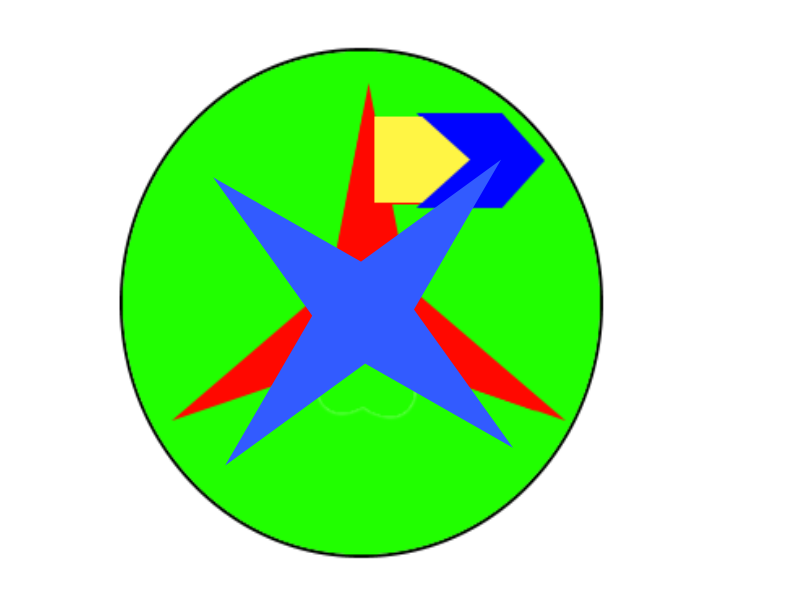

Slorp
Sites Slorp
Astuce PC
Astuce programmation
l'école de l'horreur
frappaverse
textyverse
Télécharger Mon Navigateur
Mes jeux disponible en lign
e
chat
obs Studio screen recorder
SHA 256 encrypter/decrypter
Gabasoft sans installation.zip
f̶̢̛̜̹̻̗̩̮̠̱̯̪̮̼̼͍̫̣̘̣̲̲̬͕͓̼͕͍̤̽̈́͗̑͗̅̐̀̀́͒̓͊̽͂͒͒̾͗̐̑̆̉͜͝͝͠r̴̼͈̳̄̍̈̓̈́̈́̆̊͐̓̔͗̓̍́͗̈́̑̑̍̌͋̌͝͠͠a̴̢̧͉͎̣̘͇̻̪̪̝͉͙̲͋̀̓͛̏̊̇̂̓̋̂̆̓̀̓̈̾̕p̴̞̯̲̠̹̠̰͎̥̹͉̗̼̖̭̖̤̱̲̐̉̈̓̊͗̏̌̀̾͛͑̂̋̏̏̄̅͑͆̈́͆̈̕͘͘͜͜͠͠͠ͅͅͅp̴̨̧̫͙̟̺̱̘̰͈͈̯̗̼͍̬̙̝͎͉̖̺̻̯̈́́͑̅̌̉̈̊͜͜ͅa̶̛͚͖͎̫̰͈̟̗̳̥̤̖͉͕̜̩̹̯̟͚̲̯̠͎̱͈̲̠̥̅̌́̓͑͘ͅͅv̶͕̮̬͉͔̈́̈́̎̈̐̇͑̒͛́͊͋̏͝ȩ̷̧̝̩̩̮̩̻̪̩̰̖̻̗̳̙̅͊͒̇͌͒r̸̨̛̛̛̹̖̬̮͙̮͇͖̠̱̺̼̦͔̠̳͎͔̹̜̮̯̞̥͉̀̓͆̔̅͗̈́͂̏̔̀̇̋͆̽̽̎̒̃̽͆̕͜ş̸̢͔̯̘̩͎̝̺̻̗͙̫̆͌͜͜ͅe̵̢̨̧̡͔̳͎̲̭͓̠̩̳̣̣͓̩̤̬̟̩͖̼̭̰͔͗̽̌́̔͑̽̑̍̎̈́͊͋̕̕͘̚͜͝͠ͅͅ ̷̧̛͍̘̟͔̝̘͍̰͍̳̼̦̩̟̪̆̐͂̾̿̈̋̔͂̂̅̊̚͜͠͠2̵͚͓̫̱̪̝͓̞̗͙̠͎̋̓́̍̉̾̓̂͐́́͐̓͆̒͜
M̷̡̝̝̘͍̯͚̺̣̻̻̗͖̎͌̄́̄͋̔̾̋̀́͌̈͂̌̈́͑͒͐̅͂̕̕͝͝ͅͅę̸̡̛̻͚̞̺̮̬̠̳̻̭̺͔̤͙̊͒͛͂̓͐̽̂͑̽͆̀̌͛͘͝ͅs̶̞̻̹̃̎̈́̾͋̆̾̅̀͂̌̎̆̄̒̋̊͌̓̓̔̓̎̅́̕̕͝ ̷̨̢̛͎̩̤̺̳͔͇̱͓͈̲͉͕̼̩͎͇̥͖͋̋́̎̄̐͆̊̍̀̎̃̽̑̈́̈́́̀̈̕͝͠j̸̢̨̼̘̖̼̫̱͍͉̻͚̤̩̩̗̤̤̙͔̠̠͎̬̹͚̦̫̯͑́̂͗̃͊̆̈͛͑͂̄̎̕͝͝͠ę̵̧̦̗̪̱͔̳̩͉͉̳͓̳̣͉̤͍̺̹̲̘͇̬̼̲͚̟̰͈̎̏̉̔̽͗̄̃̉̐́͒̊͗̐̎̓͛̂̚͝͝͠͠ǘ̴̢̡̦͈̝͈̭̮͍͔͎͗̓̽̋̊̅̆͂̌̓́̈́͝x̸̲̼̅́̀́̉̓̆͋̔̀̀̈́̇̅͑͗͑͋̑̐̋͐̇̀͋̑́̂̈́̚͠
t̴̜̖̮̯̤͔̤͈̞͍͎̫̗̠͓̺̒͗͊̓́͛̌̆̇͜͝͠e̴̢̢̬̟͇͖̤͕͈͈̋̒̄̈́̃̓͛̾́͊̅̈̆͋͌̍̀͑͋͒̃̀̚͘x̷̡̡͔̭̹̬̣̬̗͈͓̟̫̹̩̰̑͒̀͛̍̀͆̈́̉̐̆͊̈͐̀̓̔̃̀̎̉͘͝͠t̵̛̤͖͇̩͚̪̤̐́̆̐́̇̍̂̋̿̍́́̒͑̈́̉́̅̃̈̕͠͠ỹ̶͎̭͈͇͚̞̝̬̲̪͓̳͌̍̀̿̾͆̎́͑̑̓̐̈̆́̾͆̔̐͗͌͂͐̕̚̚͜͠v̸̡̤̣̝̳͇̯͕̗̰̬̮̰̬̝̤͆̒̆́͌̇͗̅̓͘̕̕͠͠ę̶͖͔̥͙̜̥̜͙̲̜͎̺͙͉̺͚̼͍̙̫͋̅͐̎̆̇̽̔̈́̐͗̍͊̏̆̓͛́͋̈́̉̓̾̕̚͜͜͜͝͝͠͠r̴̢̡̠̝͙̞̞̬̘̘͚͖̻̩̭͉̒̏̀̀̌͒͋̒͗͊͘͝s̷̢̢̨̭̯̼̹̟̜̬͖̣̫͙̦͙̺̬͙̣͔̯̻̙͛̄̅́̅́̈̚͜͜͝͝͝e̴̥͕̺̦̗̼̳̘̟͈̥͎̋̓͝͝ͅ ̵̙̪̳͙̤͇̲̬͚̜͚͕͌̈́̃̓̃͆͑̈́̓̅͝2̴̨̬̗͕̫̭͙̤̟͇̳͉̤̩̠̞̪̗͇̇̾͝ͅͅ
©
© 2024 Slorp. Tous droits réservés.
at freevisitorcounters.com